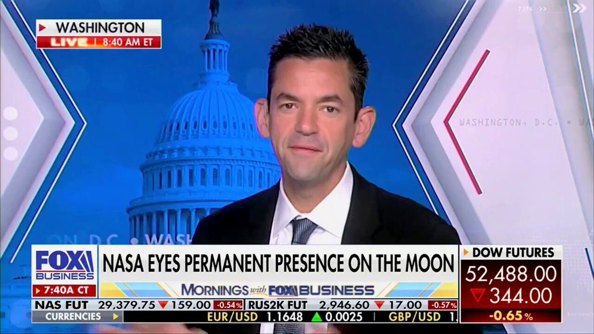
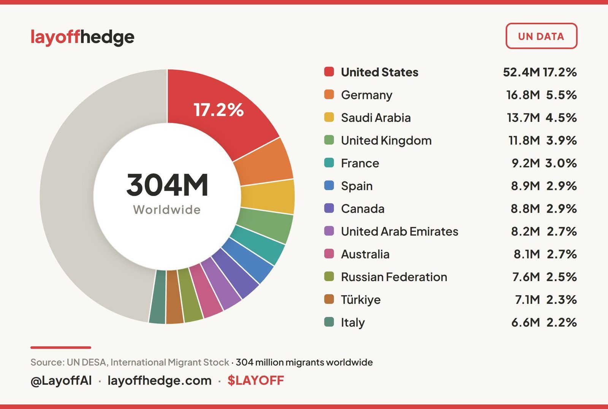
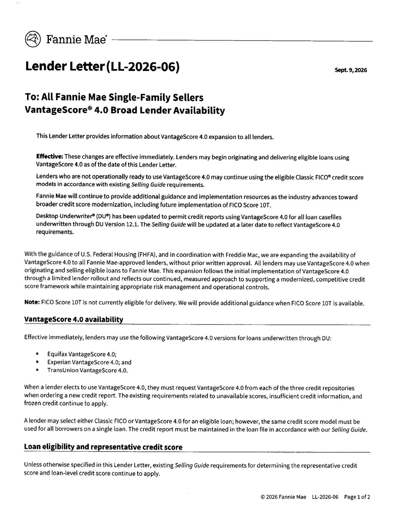
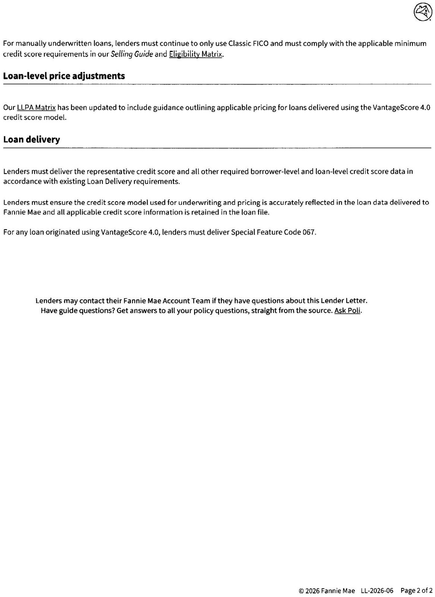
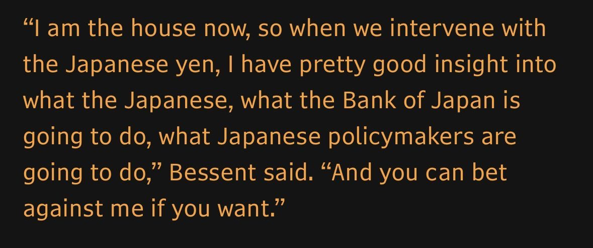

🚫 CLAIM: Iran’s Islamic Revolutionary Guard Corps (IRGC) forces have claimed they struck two U.S. Navy destroyers operating in the Middle East. This is completely FALSE. ✅ FACT: No U.S. Navy warship has been struck; all IRGC attempted attacks failed. Meanwhile, U.S. forces have successfully destroyed 10 Iranian tankers in just the last week. These vessels were part of a multibillion-dollar shadow network that funds the IRGC, and Iran cannot defend them.
The Department of War announced the planned installation of the State of Indiana’s first advanced nuclear Micro Modular Reactor (MMR) at Naval Weapons Station (NWS) Crane no later than September 2028. This action implements President Donald J. Trump’s Executive Orders, Deploying Advanced Nuclear Reactor Technologies for National Security and Reinvigorating the Nuclear Industrial Base, which advances a clear mandate to restore American nuclear leadership globally, remove barriers to innovation, and rebuild the domestic nuclear workforce.
The overall project is being executed jointly by the Army’s Janus Program, the Office of the Assistant Secretary of the Navy for Energy, Installations and Environment, the Office of the Under Secretary of War for Research and Engineering (OUSW(R&E)), and the State of Indiana. Together, these partners will secure continuous power for one of the Nation’s most important defense technology and weapons installations, create highly skilled American jobs, strengthen the American nuclear supply chain, and rebuild the industrial capacity required for national defense.
The commercially owned and operated MMR at NWS Crane, one of the United States’ premier warfighting innovation and capability development hubs, marks the first step in a larger, unified Department-wide effort to deploy safe and secure nuclear power for national security. The MMR installation will provide reliable, around-the-clock power independent of the commercial electric grid, capable of sustaining critical operations under the most demanding conditions. As the first power-producing reactor installed in Indiana, this project expands the United States’ power generation capacity and modernizes the energy infrastructure needed to serve local communities and advance missions critical to national security.
The MMR installation is being executed through the Army’s Janus Program, in coordination with the Department of the Navy, the Department of War Innovation Unit, and the Office of the Assistant Secretary of War for Critical Technologies (OASW(CT)). This cross-service effort brings together the Army’s role as the Department’s executive agent for installation nuclear energy, the Navy’s operational mission at NWS Crane, DIU’s access to commercial innovation, and the Department’s critical technology enterprise.
“Under President Trump’s bold leadership, the Department of War is rapidly fielding next-generation energy solutions for our warfighters,” said Emil Michael, Under Secretary of War for Research and Engineering. “We are unleashing the American nuclear industrial base to ensure our military installations possess the resilient infrastructure required to maintain uninterrupted operations.”
OASW(CT) is leading the coordination of key stakeholders across the Department to integrate and execute the Crane project under the Janus Program. “At Critical Technologies, we start from a simple first principle: a technology matters only when it reaches the mission,” said Mike Dodd, Assistant Secretary of War for Critical Technologies. “Our standard is to field and deploy capability within 24 months or less. President Trump’s Executive Order gave the Department a clear mandate to move advanced nuclear power from promise to deployment. We turned that mandate into a focused sprint within our Contested Logistics Critical Technology Area to deliver this capability on time and on target, strengthen the American nuclear industrial base, and secure a decisive advantage for our warfighters.”
“Janus was designed from the beginning to deliver capability beyond the Army,” said the Honorable W. Jordan Gillis, Assistant Secretary of the Army for Installations, Energy and Environment. “This partnership demonstrates what is possible when we combine the Army’s nuclear expertise and regulatory authorities with the operational installation requirements of our sister Services and the innovation of American industry. Together, we are building a pathway to resilient nuclear power that can strengthen mission assurance across the Joint Force.”
“Energy security is warfighting capability. Hosting the Navy’s first shore-based advanced microreactor at NWS Crane under the Janus Program underscores our commitment to hardening our shore infrastructure against evolving physical, cyber, and grid vulnerabilities,” said the Honorable Brendan Rogers, Assistant Secretary of the Navy for Energy, Installations and Environment. “Partnering with the Army and OASW(CT) allows us to move with speed, establish a resilient firm power backbone, and protect the vital research, development, and manufacturing our Fleet depends on every day.”
This initiative builds on more than a year of close coordination between the Department of War and Indiana state leadership. Senator Jim Banks has been an indispensable partner in advancing the MMR initiative from concept to installation in the Hoosier State. His leadership, together with the direct support of Governor Mike Braun, Senator Todd Young, Representative Erin Houchin, and Representative Mark Messmer, has cleared the path for the Department to move with speed to secure our national defense infrastructure.
The Department will continue to work with Federal, state, and local partners throughout the required safety, environmental, regulatory, and installation processes. Nuclear safety, physical security, cybersecurity, and responsible stewardship of taxpayer resources will remain central at every stage. This project marks the first milestone of President Trump’s mandate to revitalize the American nuclear industrial base and deploy next-generation energy technologies to secure an enduring advantage for the Joint Force.
Read the full press release here: https://www.war.gov/News/Releases/Release/Article/4593065/department-of-war-announces-navys-first-advanced-nuclear-microreactor-deploymen/
The #SpaceForce has approved project planning and selected Lake Kickapoo, Texas, as the preferred location for the third and final site of the Deep Space Advanced Radar Capability global network, pending final planning approvals. More: https://www.ssc.spaceforce.mil/Newsroom/Article/4593773/us-space-force-selects-texas-as-preferred-location-for-third-darc-site
The next front door to commerce may be an AI agent. Today, we're introducing Mastercard Agent Connect and expanding Agent Suite for Merchants to help businesses build, connect, and scale AI-powered shopping experiences. Learn more about how we're powering the future of commerce with partners across the ecosystem: https://www.mastercard.com/us/en/news-and-trends/press/2026/september/mastercard-gives-merchants-a-simpler-way-to-build--connect-and-s.html
⚡️NEW: Visa now OFFICIALLY supports 160+ stablecoin-linked card programs.
The payments giant is now expanding into onchain lending, giving stablecoin-focused companies access to new financing options.
Visa's Head of Crypto Cuy Sheffield even said that stablecoin-linked cards are in “hypergrowth mode.”
Over $700 BILLION in stablecoin-denominated loans have moved through on-chain lending protocols in the past six years.
💡 Did you know?
Swift's blockchain-based ledger has been built with our community and is ready for use, with 17 early adopter institutions helping bring tokenised value into the regulated financial system.
Find out how the industry is preparing for always-on, cross-border value transfer: https://t.co/9ZLF2UIGT0
#CrossBorderPayments #SwiftBlockchainLedger
▶ Watch on XBanks and credit unions across the country are live on the FedNow® Service. These innovative institutions are enabling individuals and businesses to send and receive payments instantly 24/7/365. See who's live on the network: https://www.frbservices.org/financial-services/fednow/organizations
In July, I called on the Senate to advance the Clarity Act — a bill to establish a comprehensive regulatory framework for digital assets and upgrade our ability to prevent bad actors from exploiting these critical technologies.
When the Senate returns from August recess, I strongly urge everyone to remain at the negotiating table, agree to the motion to proceed, and continue the legislative process. Failing to do so would send a troubling signal to our allies and adversaries alike that America is unwilling to lead on the future of digital assets and willing to forgo enhanced national security tools to combat their misuse.
JUST IN: U.S. Bank, America's fifth-largest commercial bank, completes its first live cross-border payment using its own $USBDC stablecoin on the @StellarOrg network.
The distinctions that defined the last generation of finance are becoming historical footnotes.
A new era is here. This is the crossover in motion.
▶ Watch on XJUST IN: 🇺🇸 US Bank completes its first live cross-border payment using its own $USBDC stablecoin.
President Trump does a flyover of The @WhiteHouse complex on Marine One before heading to @Andrews_JBA earlier this afternoon. Air Force One is wheels up and en route to Dallas, Texas…
REPORTER: "Are you sure this plane is safe to fly?"
@POTUS: "Yeah, I am — or I wouldn't be on it." 🤣
▶ Watch on XJUST IN: TSA rolls out new program allowing people without plane tickets to enter airport gates to visit terminal restaurants & shops.
Chinese state media admits that the US eviscerated Iran and that Chinese weapons, used in Iran and Venezuela, are woefully unprepared against America.
Follow: @AFpost
🚨 INTRODUCING: SPACE TASK FORCE 🚀
The new @USDOT team will unleash COMMERCIAL SPACE INNOVATION by streamlining approvals, expanding launch infrastructure, and eliminating unnecessary red tape as we scale toward 10,000 launches per year by 2035
The next era of space transportation is HERE and led by America – not China 🇺🇸
Grok can now trade and manage a portfolio on @Coinbase.
Add the Coinbase connector, then ask Grok to check balances, analyze data, and place or cancel trades for any available asset, right from chat.
▶ Watch on X.@NASAAdmin: "@POTUS knows that great nations do great things."
"He's a builder. He's rebuilding our industrial base in America, infrastructure right now, he's rebuilding our military, he's helping rebuild our space program."

▶ Watch on XBREAKING: AT&T is becoming the first major U.S. telecom provider to integrate Amazon Leo’s “low Earth orbit satellite network” with its fiber and 5G infrastructure.
REPORTER: "Can you tell us about your conversation with President Putin?"
TRUMP: "We had a great conversation. He is wanting to make a deal — and if Zelensky is wanting to make a deal, that'd be very nice."
REPORTER: "What is the holdup?"
TRUMP: "The holdup is two people that hate each other."
25% of all Mexicans live in the US. 70% rely on welfare.
10% of Guatemalans live here. 77% are on welfare.
12% of Nicaraguans live here. 75% rely on welfare.
12% of Haitians live here. 53% rely on welfare.

.@DrOzCMS: "We're making progress on healthcare affordability — evidenced by the fact that we had the largest drop in pharmaceutical drug prices for consumers in 63 years."
NEW:
LENDER LETTER, FROM FANNIE MAE TO LENDERS, ALLOWING LENDERS TO ORIGINATE AND DELIVER LOANS VIA VANTAGE SCORE


Not going to lie. This is a pretty baller line from Bessent.
“I am the house now”

The U.S. Department of the Treasury today announced that @FinCENnews has identified approximately $17.5 billion in suspicious financial activity potentially linked to health care fraud, underscoring @POTUS’ commitment to eliminating fraud, protecting taxpayers, and safeguarding the integrity of federal health care programs.
JUST IN: CIA Deputy Director reveals the U.S. is expanding espionage against China to include Chinese companies in sectors like AI, semiconductors, & biotechnology.
JUST IN: Sapporo beer to move production from Canada to US